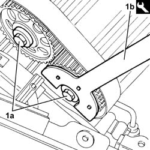
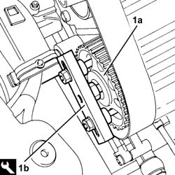

1032B55 lh head toothed drive pulley - r r for versions with air conditioner
- Path
- Procedures > 10 ENGINE > 1032 TIMING SYSTEM > 1032B belt timing system > 1032B55 lh head toothed drive pulley - r r for versions with air conditioner
- Kind
- repair procedure (removal / refitting; the operation number is the code)
- Applies to
- engines: 2.5 V6, 3.2 V6; all production periods
- Interactive page
- https://sloeber94.github.io/elrnDB-a156/en/#/3237492
Applies to: engines: 2.5 V6, 3.2 V6; all production periods
 Removing
Removing
 Refitting
Refitting4450B10 Front WHEEL (one) - R.R.
7055B64 Engine compartment DUST shield in front wheel arch (one), left or right - R.R.
1092G10 single engine belt r r
1092A10 Crankshaft services PULLEY - R.R.
1032D12 timing system protective cover(s) - r + r
1. Undo the bolts (1a) of the driven pullies, using the tool (1b) for counter-torque.
 | Name | Country |
|---|---|---|
1b | Counter-torque | 1.822.146.000 |

Applies to: engines: 2.5 V6, 3.2 V6; all production periods
1. Remove the driven pullies (1a) from the left cylinder head using the tool (1b).
| Name | Country |
|---|---|---|
1b | Extractor | 1.860.954.001 |

Applies to: engines: 2.5 V6, 3.2 V6; all production periods
Refitting
RemovingFit the left head driven pullies and fix them with their bolts without tightening them.
Carry out op. 1016A42 left hand cylinder head ignition coil cover - r+r
Carry out op. 1072B50 sleeves connecting air capacity box to inlet manifold is - r+r
Carry out op. 5510C14 ignition coil/s - r+r
Carry out op. 1016A36 left hand and right hand cam cover - r+r
1016A36 left hand and right hand cam cover - r+r
1072B50 sleeves connecting air capacity box to inlet manifold is - r+r
1016A42 left hand cylinder head ignition coil cover - r+r
1032D12 timing system protective cover(s) - r + r
1092A10 Crankshaft services PULLEY - R.R.
1092G10 single engine belt r r
7055B64 Engine compartment DUST shield in front wheel arch (one), left or right - R.R.
Topics linked from this page (10)
- 1016A36 left hand and right hand cam cover - r+r
- 1016A42 left hand cylinder head ignition coil cover - r+r
- 1032B14 toothed timing belt - r + r for timing adjustment or replacement versions with air conditioner
- 1032D12 timing system protective cover(s) - r + r
- 1072B50 sleeves connecting air capacity box to inlet manifold is - r+r
- 1092A10 Crankshaft services PULLEY - R.R.
- 1092G10 single engine belt r r
- 4450B10 Front WHEEL (one) - R.R.
- 5510C14 ignition coil/s - r+r
- 7055B64 Engine compartment DUST shield in front wheel arch (one), left or right - R.R.